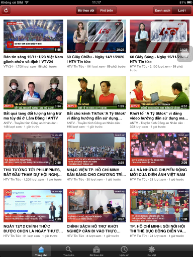

Nhóm Telegram @tivikit (t.me/tivikit). Telegram không mở được trên iOS 6: quét mã QR bằng điện thoại, hoặc tìm @tivikit trong Telegram.
Nhóm Telegram @tivikit (t.me/tivikit). Telegram không mở được trên iOS 6: quét mã QR bằng điện thoại, hoặc tìm @tivikit trong Telegram.TubeMini — xem YouTube trên iPad iOS 6. Cần server tubemini-server chạy trong mạng nhà (Windows, Ubuntu hoặc Docker), xem tubemini.github.io.
Mở TubeMini → Cài đặt → nhập địa chỉ server, ví dụ http://192.168.1.10:8080.
Nhóm Telegram @tivikit (t.me/tivikit). Telegram không mở được trên iOS 6: quét mã QR bằng điện thoại, hoặc tìm @tivikit trong Telegram.


Mã nguồn mở GPL-3.0 · github.com/TubeMini/TubeMini · Không liên quan tới YouTube hay Google.